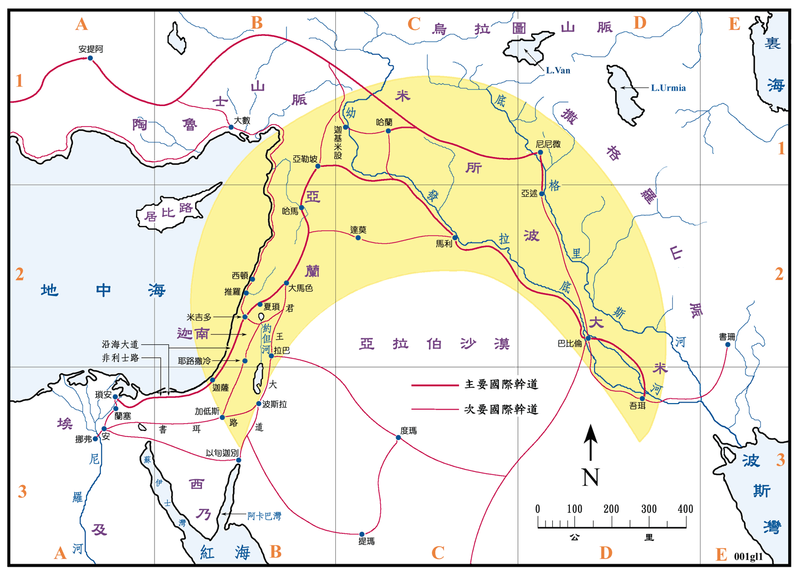

圣经中所叙述的历史，约有数千年之久，所包括的地区也非常的广大，东是起自现今的伊朗，西到西班牙，其间计有中东、西亚、北非和南欧。这一片广大地区的中心就是以色列，旧约的世界常用「肥沃月湾」来表示，就是图中黄色的地区，这片新月形的土地，东部和中间是两河流域，即圣经中的米所波大米，西端是现今的以色列，就是旧约中的迦南地。旧约另一个常提到的国家就是埃及，它在迦南地的西南方，只隔着西乃半岛的沙漠地带。
早在四、五千年以前，世界上已有两大古文明分别在埃及和两河流域产生，迦南地俨然的成为他们往来的通道和文化汇合之地。因为埃及北方是大海，其他三面都是广大的沙漠，只有东北角可沿着海岸线，经由迦南地通往两河流域。在两河流域方面，在它的北方和东方有撒格罗、乌拉图和陶鲁士三大山脉相连接，在东南则有波斯湾；在南还有亚拉伯大沙漠，这些都妨碍他们向外发展，所以迦南地也是他们的唯一通往埃及之路。处在这样的地理位置，使得迦南地的民族众多、文化高、宗教混杂，也使得迦南地自古就成为商务的要道，军事和政治的要冲，在历史上扮演了重要的角色，是列强必争之地，至今仍是如此。
以今日的眼光来看，远古时代的大道，都是十分的简陋，可说是人畜所走出来的。人们选择平顺而险阻少之处，随时清除障碍，走的时间长了，就成小路，用的人多了就成了大道，这是一种很自然的现象。古代迦南地区对内和对外的道路网已无遗迹可考，本图则是就圣经上之记载参考地理情形而绘，故并不准确，只能供作参考之用。
迦南地主要对外的一条道路称为主干道，大部份路线是沿地中海东岸而行，故又称「沿海大道」(Via Maris)，是起自埃及东北的大城琐安，沿海岸通到迦萨，这一段路在<创世记>中称为非利士的路。再由迦萨沿海岸北上经米吉多和夏琐通往大马色，再由大马色经哈马到亚勒坡，然后转向东，沿幼发拉底河经马利和巴比伦到达吾珥。
另外一条主干道称为「君王大道」(The King's Highway)，是起自阿卡巴湾的以旬迦别，往北经西珥山区、波斯拉、吉珥哈列设、底本、希实本、拉巴、基列拉末等，到大马色后即衔接大干道去吾珥。君王大道在死海以南，又有两条大道自埃及的安城通来连接，其一是从波斯拉经加低斯去安城，称为书珥路；另一条从以旬迦别去安城。
沿着腓尼基的海岸，也有一条国际大道，南起自米吉多，往北可到小亚细亚。
迦南地的海岸平直，没有好的港湾，所以海上的交通微不足道。在圣经中只提到在所罗门王的时代中，曾由利巴嫩将木料扎成的筏子，浮海运到约帕。另外尚有南方阿卡巴湾的以旬迦别和以禄两个港口，可以作远洋的航行。但是在腓尼基却有推罗和西顿两个良好的港口，可停泊大型船只，可以航行远达地中海各重要港口。
其他有关之道路请参看图，不再用文字介绍。